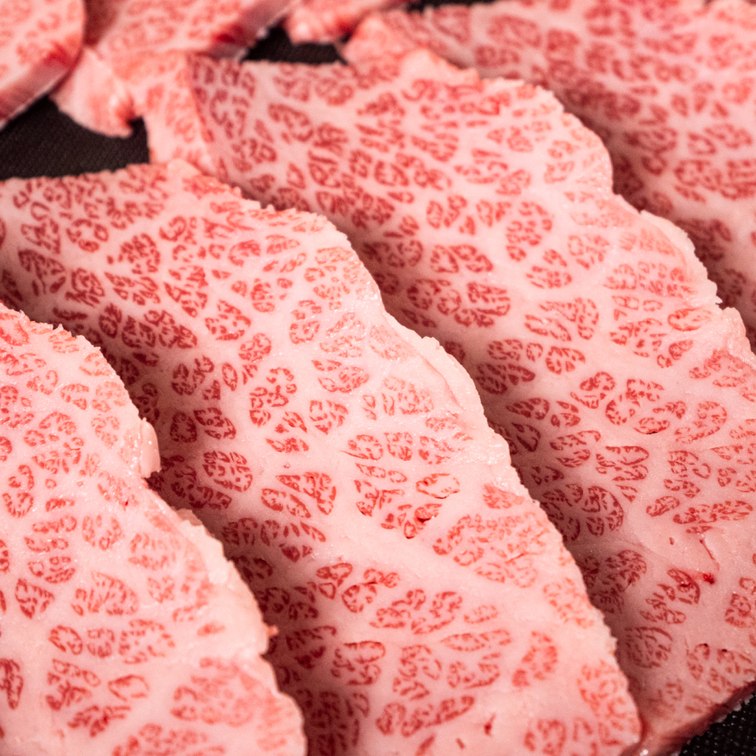
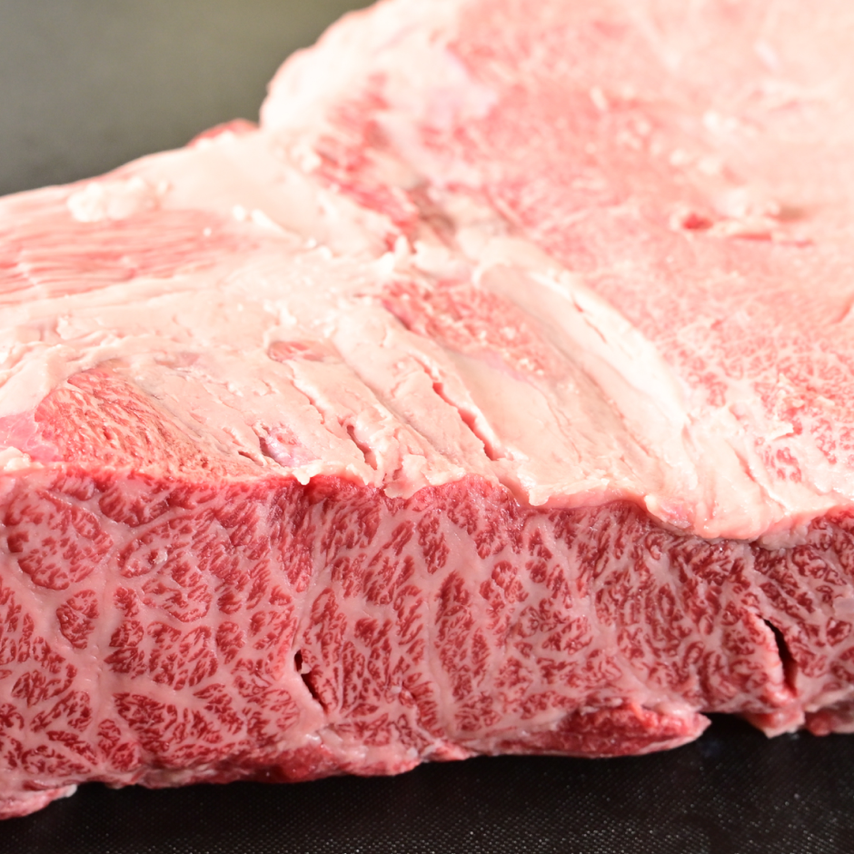
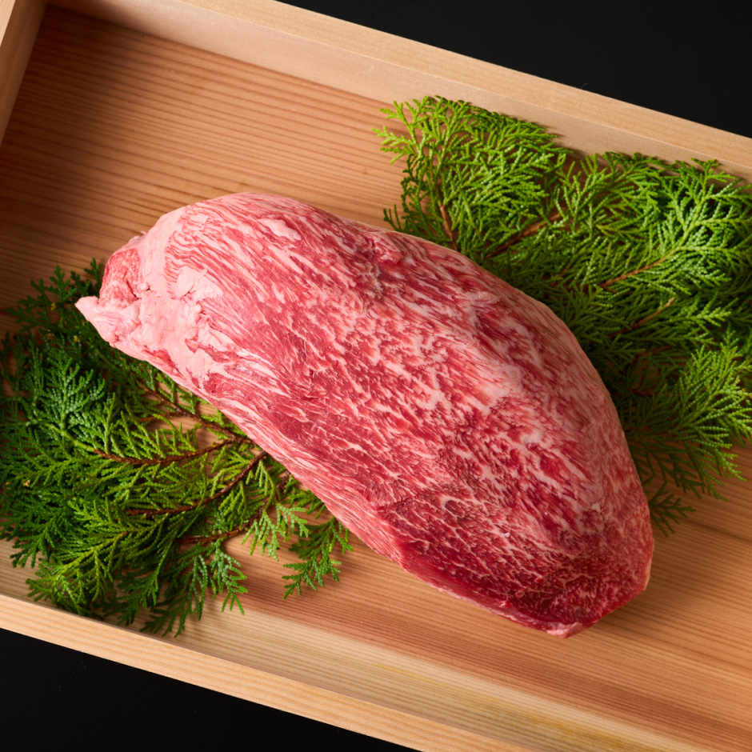
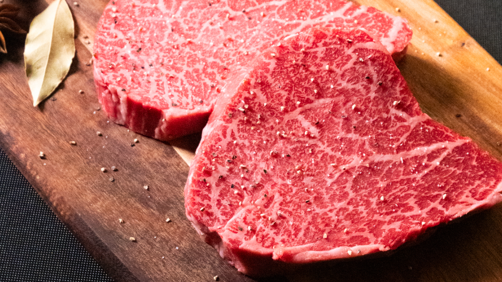
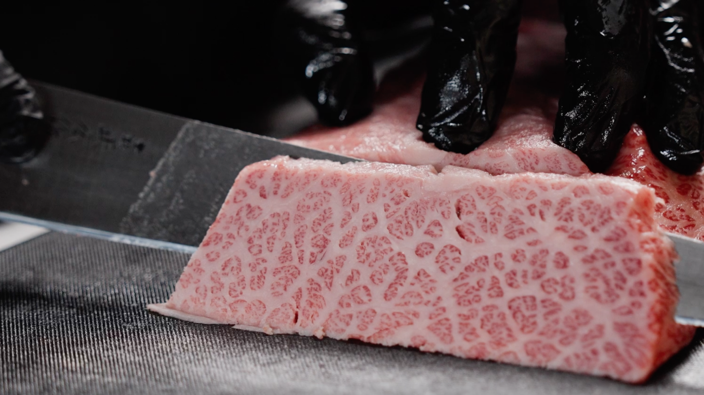
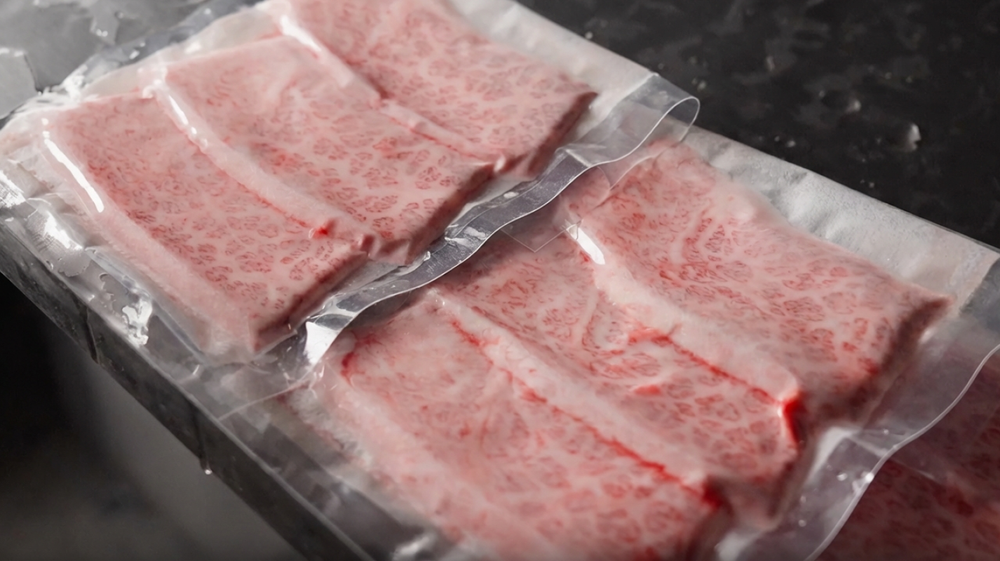
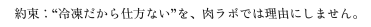

iiniku翔について

美味さには、理由がある。
iiniku翔は「なんとなく肉を買う」時代を
終わらせます。
部位、用途、焼き方まで
考え抜いたプロ視点の神戸牛を、
ECで届ける。
だから安くはない。
けれど、食べれば理由がわかる品質だけを扱います。
-
売り切れるのには、
理由があります。売り切れるのには、理由があります。
iiniku翔は、ネット販売を軸に、仕入れと加工を計画しています。
しかし仕入れ枠と加工キャパには上限があり、
無理に数量を増やすと、
目利き・カット・急速冷凍の精度が落ちてしまいます。
だからこそ、状態の良い肉を、最高の状態で仕上げられる分だけ。
数量限定は“希少感の演出”ではなく、品質を守るための仕様です。 -
「状態が良い」と言える
根拠を持つiiniku翔では、入荷時に必ず状態を確認し、
部位ごとの特性に合わせて用途を設計します。
色味や脂の入り方、きめ、張りといった要素を見て、
最もおいしくなる使い方へ導く。
仕入れは“量の確保”ではなく、“品質の確定”だと考えています。
神戸牛についても、ラベル・証明関連の管理を徹底し、
根拠を残す運用を行います。 -
赤身・希少部位・ホルモンまで、
プロ基準で選定iiniku翔は、赤身・希少部位・ホルモンまで幅広く取り扱います。
ただしラインナップは固定ではなく、
入荷した肉の状態を見極めて、
その週に“いま出すべき部位”を中心に組み立てるため、
内容は週ごとに変わります。
そのため販売は数量限定。「いつでも同じものを大量に」ではなく、
良いものを良い分だけが基本方針です。
Strengths 3つの強み
-
01
「安定供給」より、
「最高到達点の品質」を優先します。iiniku翔の仕入れは、まず「届けたい品質」を決めるところから始まります。
独自ルートで入荷できる強みはありますが、何でも仕入れるわけではありません。
だから「いつでも大量にある」のではなく、良いタイミングに、良い分だけ。
この方針が、数量限定という形にもつながっています。 -
02
旨さは、肉質だけでなく
“切り方”で決まります。同じ部位でも、筋の向き・脂の層・厚みで、火入れの仕上がりは変わります。
iiniku翔では部位の特性を見て、
焼きやすさ・噛みやすさ・香り立ちまで逆算してカットします。
「どの厚みが一番おいしいか」「どこまで筋を残すか」まで細かく設計し、届けたい。
それが、精肉店としての価値だと考えています。 -
03
冷凍は“保存”ではなく、
“品質を止める技術”にします。一般的な冷凍は、ゆっくり凍ることで細胞に負担がかかり、
解凍時にドリップが出やすくなります。
そこで劣化しやすい温度帯（-1℃〜-5℃）を素早く通過し、
色・食感・旨味をできるだけそのままキープ。
解凍しても水っぽくなりにくく、「え？これ冷凍？」と感じる体験に近づけます。